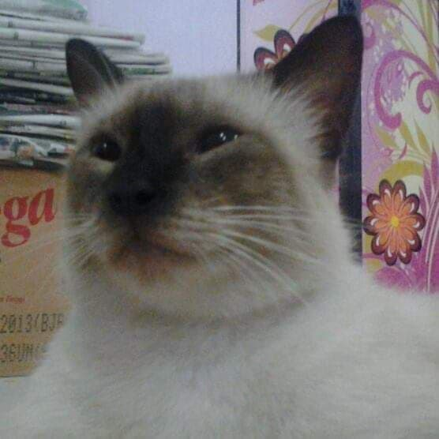
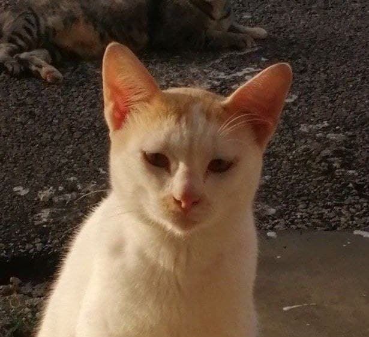
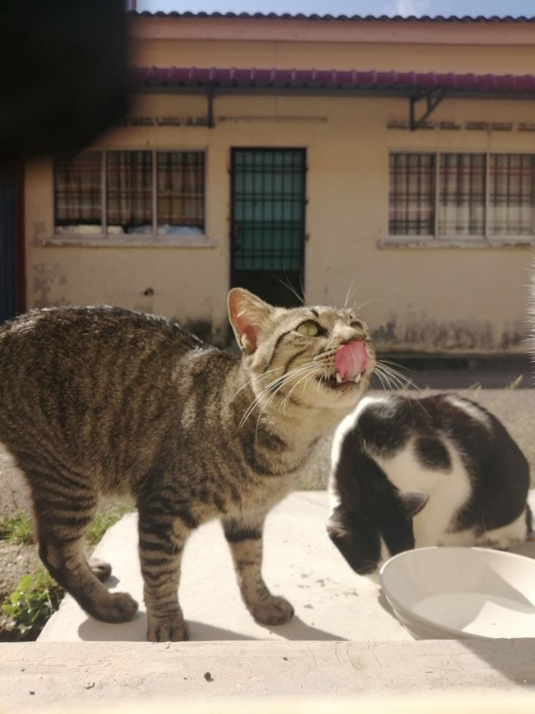
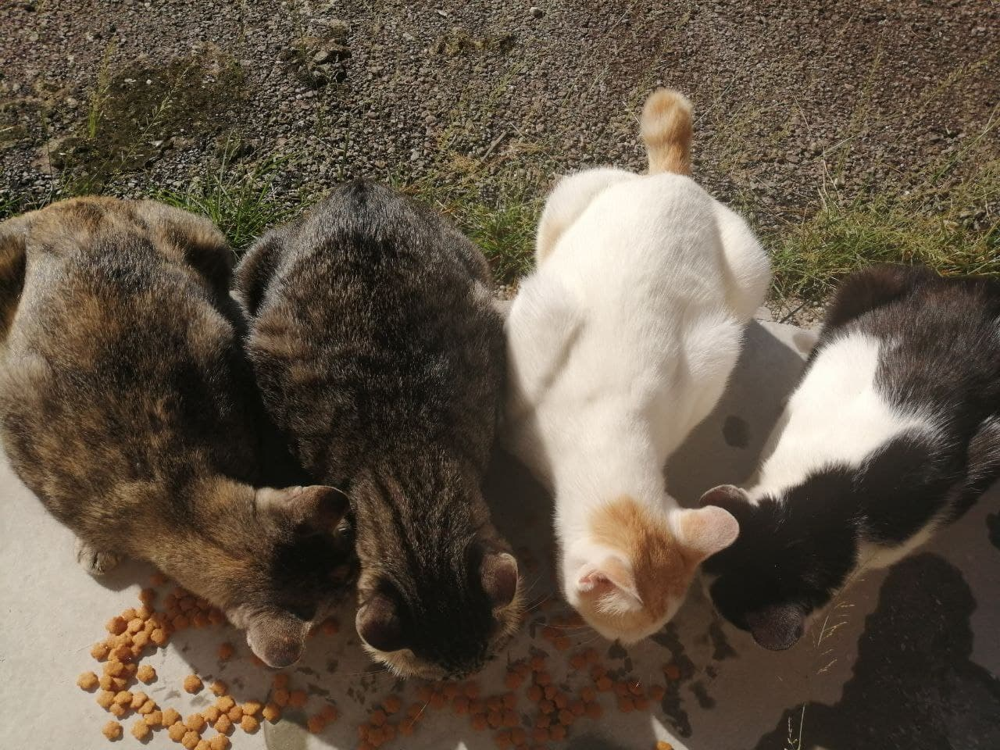
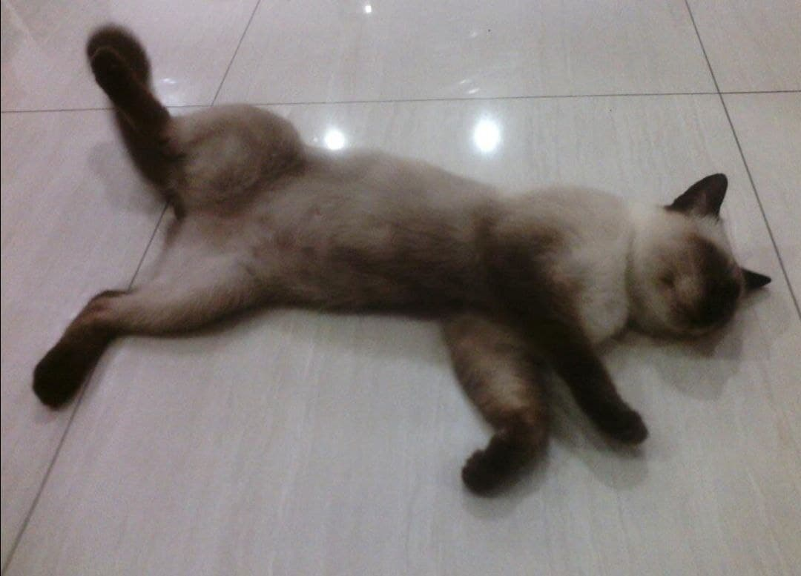
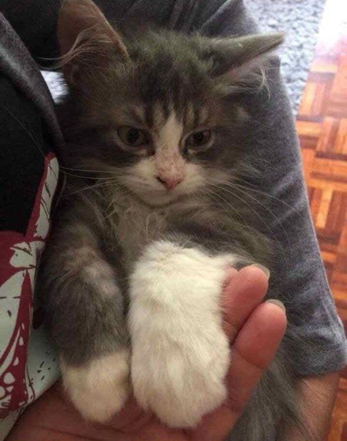
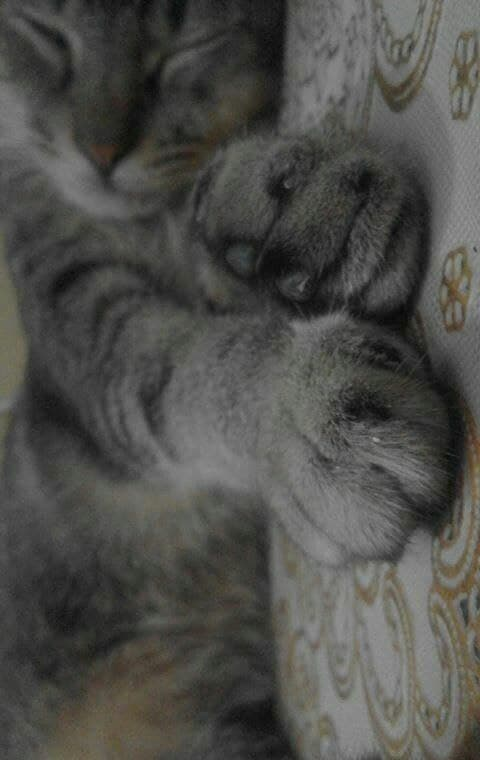
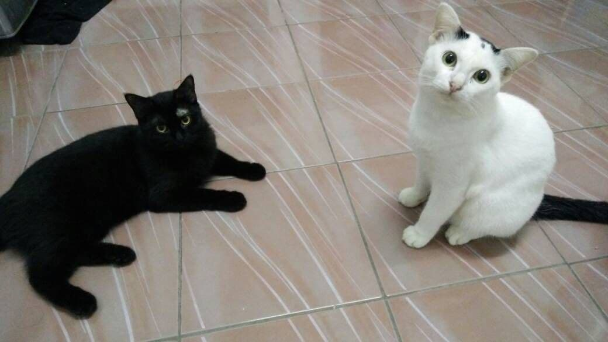
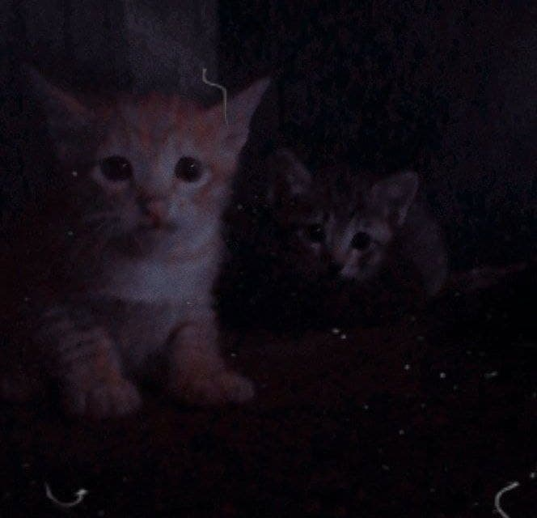

CATS
I LOVE TO TALK ABOUT CATS
THERE ARE MANY TYPES OF CATS
LET'S KNOW ABOUT IT...
Cats choose us, we don't own them!!
Abyssinian Cat


Abyssinians are extremely intelligent and inquisitive people.
They are inquisitive by nature and will examine every nook and corner.
They're known as "Aby-grabbys" since they like to take items that catch their attention.
Aby is a jumper and climber who enjoys having fun.
To keep her occupied, have a range of toys on hand, including puzzle toys that will test her wits.
American Bobtail Cat Breed


The American Bobtail is an athletic breed with numerous dog-like characteristics that resembles a bobtailed wildcat.
Despite their wild appearance, American Bobtails are loving companion cats who make excellent additions to any family.
They get along well with children and other four-legged pets since they are social and laidback.
American Wirehair Cat Breed


The American Wirehair is an American original with a fully unique wiring coat. It is intelligent and very adaptive.
The easygoing, caring, and sweet personality of the American Wirehair makes her a great companion for families with children and other pets. This breed is both playful and laid-back, and she is very aware of her surroundings.
Bombay Cat


The Bombay is a laid-back cat with a lot of energy.
She thrives in both quiet apartments and families with children and other pets where she is the centre of attention.
She'll speak to you in a distinct voice, and you'll most likely find her in the warmest part of your house,
whether it's in direct sunshine from a window or nestled up in bed with you.
Bengal Cat


Bengal Cats have the tameness of a domestic tabby with the beauty of an Asian Leopard Cat, making them curious and confident.
Bengal cats have a slender, balanced appearance due to their athletic appearance and well-defined muscles.
Their cheekbones are high, their eyes are dark, and their ears are short and pointed but round at the points.
Their coats have a fluffy, unique feel that no other cat breed has.
British Shorthair Cat Breed


The British Shorthair is a laid-back cat. She enjoys being touched, but she is not needy and dislikes being carried.
She will, however, follow you from room to room out of curiosity.
Although British Shorthairs are not lap cats, they do enjoy snuggling on the couch with their owners.
Birman Cat Breed

 br>
br>
The Birman's gentle and loving personality makes her an excellent pet and companion.
Birmans are friendly and playful, and they enjoy being around people.
They are very patient and social with children and other animals.
While Birmans are mostly quiet, they do have gentle, chirping voices that they use to communicate.
They appreciate being noticed and want to be near their loved ones, assisting with whatever activity is taking place.
American Curl Cat Breed


American Curls are renowned as the Peter Pan of cats because they retain their kitten-like personality throughout their lives.
They are a pleasant, people-oriented breed. The Curl is an affectionate partner with an easygoing disposition
who gets along with other dogs and children.
Balinese-Javanese Cat Breed


This breed may appear to be the picture of sophistication, but beneath its graceful exterior lies the heart of a playful kitten.
Balinese and Javanese people adore each other and long to be with them. This makes them excellent companions for individuals with the time and willingness to appreciate this knowledgeable and interesting companion.
The Balinese and Javanese, like the Siamese, are chatty. They are outgoing people who get along well with kids.
Burmese Cat


She's still energetic, curious, and fun as an adult, and she enjoys playing with interactive toys and learning new tricks.
Expect her to follow you about, sit on your lap, and snuggle next to you in bed since she enjoys giving and receiving attention.
Her cheerful, dog-like personality will surprise guests.
Chartreux Cat Breed


The Chartreux, sometimes known as the French smiling cat, has a lovely, smiling smile.
The coat of this tough, robust cat is a striking blue with a tough woolly undercoat.
The Chartreux, who are noted for being excellent mousers with great hunting instincts, enjoys toys that move.
This is a slow-growing breed that takes three to five years to mature.
The Chartreux creates a close bond with her family as a caring, kind companion.
Devon Rex Cat Breed


The Devon Rex is sometimes referred to as a poodle that purrs because of her curly coat and her tail, which wags when she is joyful.
The Devon Rex is a wonderful loving companion who gets along well with other cats and dogs who are cat-friendly.
She enjoys spending time with her family and acquiring new skills.
Manx Cat


The Manx is a kind, even-tempered, and playful cat when she isn't chasing bugs or rodents or guarding her area.
She enjoys following her favourite person around the house and sleeping on their lap.
In her modest chirp, your Manx will even interact with you.
Egyptian Mau Cat


Egyptian Maus enjoy playing with water and have figured out how to switch on the tap.
She enjoys curling up on your lap for a snuggle session despite her high energy levels.
She gets along well with playful youngsters and other cat-friendly pets who can keep up with her active and dynamic lifestyle,
but she's afraid of strangers.
Japanese Bobtail Cat Breed


The Japanese Bobtail, one of the oldest cat breeds,is thought to bring good fortune and success.
This delightfully playful kitten enjoys playing fetch and carries things in her mouth.
The Japanese Bobtail is a friendly breed that lives an average of 15 to 18 years and is especially friendly with children.
Exotic Shorthair Cat Breed


The Exotic Shorthair, also known as the "lazy man's Persian," has the body form and easygoing disposition of the Persian but
lacks the coat length and grooming requirements.
Himalayan Cat Breed


The Himalayan Cat is a kind and friendly kitty. She's sweet, but she's picky.
She enjoys lying in your lap and being petted, yet she may be shy with strangers.
The Himmie lives in serene, placid situations with minimal daily changes.
Maine Coon Cat Breed


Maine Coon cats have a kind and sociable attitude, making them excellent companions.
They are affectionately playful and inquisitive throughout their lives, making them kitten-like.
LaPerm Cat


The LaPerm is known for her curly, rippling coat and people-oriented disposition. She is quiet and pleasant at times,
but lively and curious at others. This cat enjoys being in close proximity to her human friends and thrives on attention.
This breed is satisfied to be a lap cat and near to whatever is going on, despite its curiosity.
Havana Brown Cat Breed


The Havana Brown is known as the "puppy of the cat fancy" because she adores following her owners around.
Brownies are bright and easy to train to fetch. They are outgoing, playful, and adorable.
Unlike cats which use their sense of smell to investigate strange objects, this cats extends her paws,
frequently appearing to offer a kind paw. The Havana Brown is a friendly creature who loves being left alone for lengthy periods of time.
Korat Cat Breed


The Korat is an unique Thai breed that is a loving persistent companion who is gentle and wonderful with children.
Despite having an active disposition, the Korat walks slowly and cautiously and dislikes loud, unexpected noises.
The breed is claimed to have excellent hearing, smelling, and seeing abilities.
The silver-tipped blue coat of the Korat, also known as rain-cloud grey in Thailand, provides a shimmering look.
MY CATS









br>
The Birman's gentle and loving personality makes her an excellent pet and companion. Birmans are friendly and playful, and they enjoy being around people. They are very patient and social with children and other animals. While Birmans are mostly quiet, they do have gentle, chirping voices that they use to communicate. They appreciate being noticed and want to be near their loved ones, assisting with whatever activity is taking place.
American Curls are renowned as the Peter Pan of cats because they retain their kitten-like personality throughout their lives. They are a pleasant, people-oriented breed. The Curl is an affectionate partner with an easygoing disposition who gets along with other dogs and children.
This breed may appear to be the picture of sophistication, but beneath its graceful exterior lies the heart of a playful kitten. Balinese and Javanese people adore each other and long to be with them. This makes them excellent companions for individuals with the time and willingness to appreciate this knowledgeable and interesting companion. The Balinese and Javanese, like the Siamese, are chatty. They are outgoing people who get along well with kids.
The Chartreux, sometimes known as the French smiling cat, has a lovely, smiling smile. The coat of this tough, robust cat is a striking blue with a tough woolly undercoat. The Chartreux, who are noted for being excellent mousers with great hunting instincts, enjoys toys that move. This is a slow-growing breed that takes three to five years to mature. The Chartreux creates a close bond with her family as a caring, kind companion.